· EEM214
EEM214 Electronics I: 2008 Midterm Answer Key, Quiz Solutions, and Practice Problems
EEM214 – Elektronik I · 11.04.2008 · 17.10.2026
This post brings together the scanned pages found in the "exam" folder of EEM214 Electronics I: the handwritten answer key of the midterm exam (11 April 2008, four questions) from the Spring 2007–08 semester, the solutions of two groups of a quiz given in the laboratory, the solutions of two groups of another quiz, and two practice problems. The questions and the main steps of the solutions are written out as text; the scanned pages are also included as images. The originals of the pages can be downloaded as a ZIP at the end of the post.
Midterm exam (April 2008)
The Useful Material sheet provided with the exam: k = 1.38 × 10⁻²³ J/K = 8.62 × 10⁻⁵ eV/K, q = 1.6 × 10⁻¹⁹ C, kT = 0.0259 eV at room temperature, n_i = 10¹⁰ cm⁻³ (300 K), h = 6.626 × 10⁻³⁴ J·s, c = 3 × 10⁸ m/s; band gaps: carbon 5.47, silicon 1.12, germanium 0.66, gallium arsenide 1.42 eV; n_i² = BT³e^(−E_g/kT); for N_D > N_A, n = [(N_D − N_A) + √((N_D − N_A)² + 4n_i²)]/2 (symmetric for p); n = n_i·e^((E_F − E_i)/kT), p = n_i·e^((E_i − E_F)/kT); f(E) = 1/(1 + e^((E − E_F)/kT)); qV₀ = kT·ln(N_aN_d/n_i²); continuity equations ∂p/∂t = −(1/q)∂J_p/∂x − δp/τ_p and ∂n/∂t = (1/q)∂J_n/∂x − δn/τ_n.
Q.1 (30 points): Infinite Si bar illuminated by light
The x ≤ 0 part of an infinite semiconductor bar is illuminated by light, and electron–hole pairs are generated uniformly in the x < 0 region at g_op = 10¹⁵ pairs/cm³·s; for x > 0, g_op = 0. The bar is Si, uniformly doped with N_D = 10¹⁸ cm⁻³, τ_p = 10⁻⁶ s, T = 300 K, D_p = 3 cm²/s, steady state.
- a) Total hole density at x = −∞: p₀ = n_i²/N_D = 10² cm⁻³. In steady state and with uniform illumination, ∂²δp/∂x² = 0, so 0 = −δp/τ_p + g_op ⇒ δp(−∞) = τ_p·g_op = 10⁻⁶ × 10¹⁵ = 10⁹ cm⁻³; p(−∞) = 10² + 10⁹ ≅ 10⁹ cm⁻³.
- b) At x = +∞: There is no optical excitation for x > 0; the excess holes diffusing to the right from x = 0 are lost through recombination, and as x → ∞ the excess hole density goes to zero: p(+∞) = p₀ = 10² cm⁻³.
- c) Is there low-level injection? For x ≤ 0, δp = δn = 10⁹ cm⁻³ << 10¹⁸ cm⁻³; yes, the low-level injection condition is satisfied.
- d) Expression for δp(x): There is no field, the doping is uniform, and the injection is low-level, so the drift current is zero. For x ≤ 0, δp = g_op·τ_p = 10⁹ cm⁻³. For x > 0, D_p·∂²δp/∂x² = δp/τ_p ⇒ δp(x) = A·e^(x/L_p) + B·e^(−x/L_p); δp(∞) = 0 ⇒ A = 0, δp(0⁺) = Δp ⇒ B = Δp: δp(x) = 10⁹·e^(−x/L_p) cm⁻³ (L_p = √(D_pτ_p)). In the graph, δp is constant at 10⁹ for x ≤ 0 and decays exponentially for x > 0.
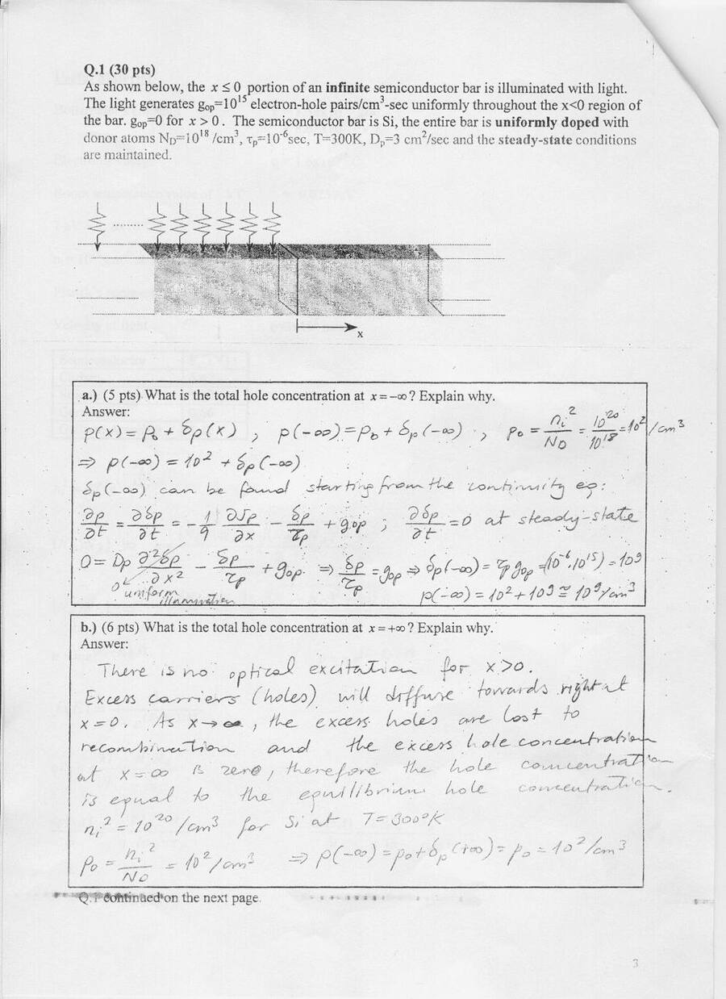
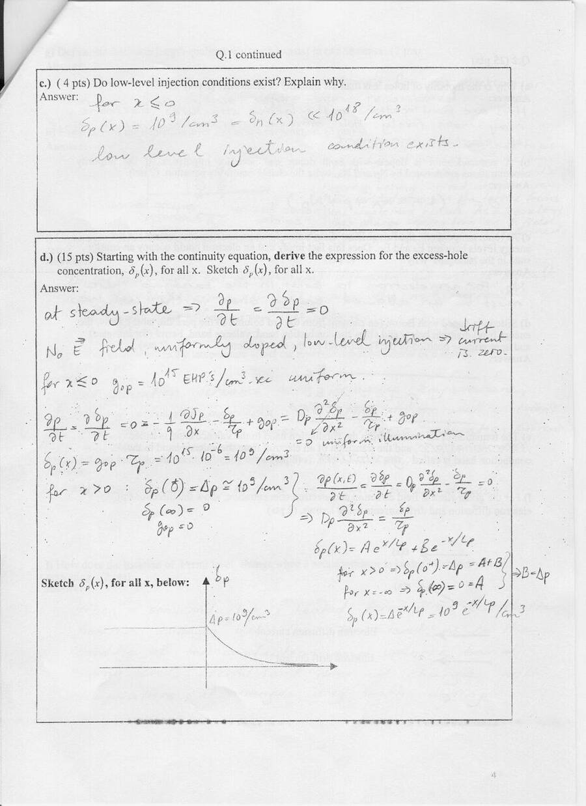
Q.2 (25 points): Short questions
- a) Why is the mobility of holes lower than that of electrons? Answer: hole motion results from electrons hopping from bond to bond; electrons move more freely.
- b) Charge neutrality in a semiconductor doped with both donors and acceptors: 0 = q(−n − N_A + p + N_D).
- c) At room temperature the Fermi–Dirac distribution takes nonzero values between E_F and E_C; does this mean an electron can occupy a state in the band gap? Answer: no; for an electron to be found in the band gap, there must be an allowed energy state there.
- d) Band diagram of boron-doped silicon: E_F lies below E_i, close to the valence band.
- e) The transition from the conduction band to the valence band is recombination, and the reverse is generation.
- f) Directions of the electron diffusion and drift currents for the given direction of E(x) and slope of n(x).
- g) Diffusion length: the average distance an electron or hole can diffuse before recombining.
- h) Depletion region: electrons diffuse from n to p and holes from p to n, leaving behind ionized donor and acceptor atoms; these fixed charges form the depletion region and an electric field.
- i) At zero bias, the diffusion current equals the drift current at equilibrium, so the net current is zero.
- j) As temperature increases, electron–hole pair generation and minority carriers increase, contributing to the drift current and increasing the reverse saturation current.
- k) Zener breakdown does not occur in lightly doped diodes; it occurs in heavily doped diodes.
- l) How does the Fermi level change when heated? The answer key states: "The Fermi–Dirac distribution changes but the Fermi level does not change with temperature, only with doping."
Note: The answer in Q.2 l is not correct for a doped semiconductor: as temperature increases, n_i grows rapidly and E_F − E_i = kT·ln(n/n_i) decreases; that is, the Fermi level approaches the intrinsic level (E_i), and at very high temperature the semiconductor behaves as intrinsic. Only in an intrinsic semiconductor does E_F stay approximately at the middle of the band gap.
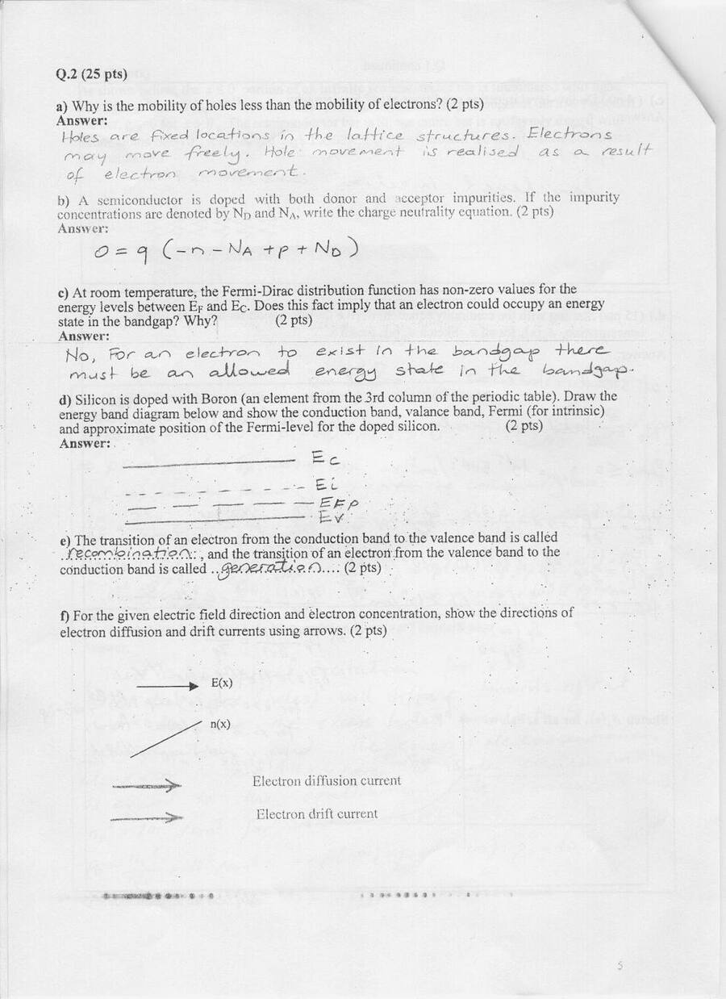
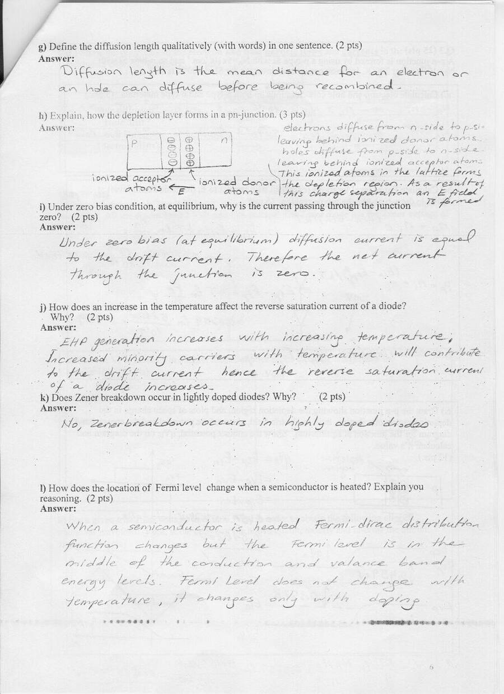
Q.3 (25 points): p-n junction
A p-n junction with p-type Si at N_A = 5 × 10¹⁷ cm⁻³ and n-type Si at N_D = 10¹⁶ cm⁻³, 300 K, n_i = 10¹⁰ cm⁻³.
- a) In the n region, n_n ≅ 10¹⁶ cm⁻³, p_n = 10²⁰/10¹⁶ = 10⁴ cm⁻³; in the p region, p_p ≅ 5 × 10¹⁷ cm⁻³, n_p = 10²⁰/(5 × 10¹⁷) = 200 cm⁻³.
- b) E_Fn − E_in = kT·ln(n_n/n_i) = 0.0259·ln(10⁶) = 0.3578 eV; E_ip − E_Fp = kT·ln(p_p/n_i) = 0.0259·ln(5 × 10⁷) = 0.459 eV; at equilibrium E_Fn = E_Fp = E_F.
- c) Sketches of the depletion region, charge density, electric field, potential, and band diagram; qV₀ = 0.459 + 0.3578 = 0.8168 eV (or V₀ = (kT/q)·ln(N_AN_D/n_i²) = 0.0259·ln(5 × 10¹⁷ × 10¹⁶ / 10²⁰) ≅ 0.8169 V).
- d) Table: hole diffusion and electron drift particle flow from p to n (→), hole drift and electron diffusion particle flow from n to p (←); current directions: hole diffusion →, hole drift ←, electron diffusion →, electron drift ←.
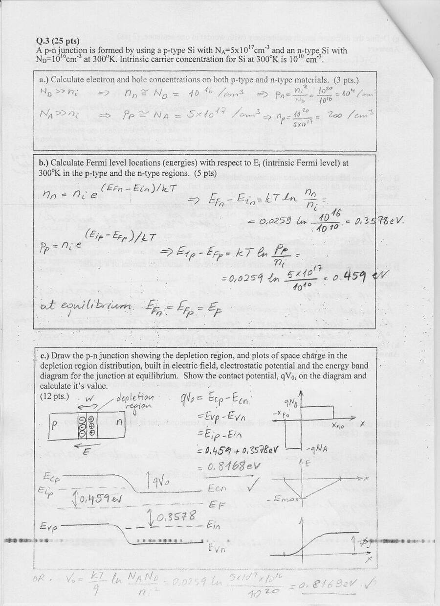
Q.4 (20 points): Transfer characteristic with diodes and Zener
In a circuit with a 1 kΩ series resistor, there are two branches in parallel at the output: a diode with a Zener connected in reverse series with it, and two diodes in series. The diode turn-on voltage is 1 V and the Zener voltage is 5 V.
- a) Transfer characteristic: for −6 V < V_in < 2 V, V_out = V_in; for V_in > 2 V, V_out = 2 V (two diodes); for V_in < −6 V, V_out = −6 V (diode + Zener).
- b) Circuit to clip a triangular-wave input at +3 V and −1 V: a single reverse-connected diode for −1 V, and three series diodes for +3 V.
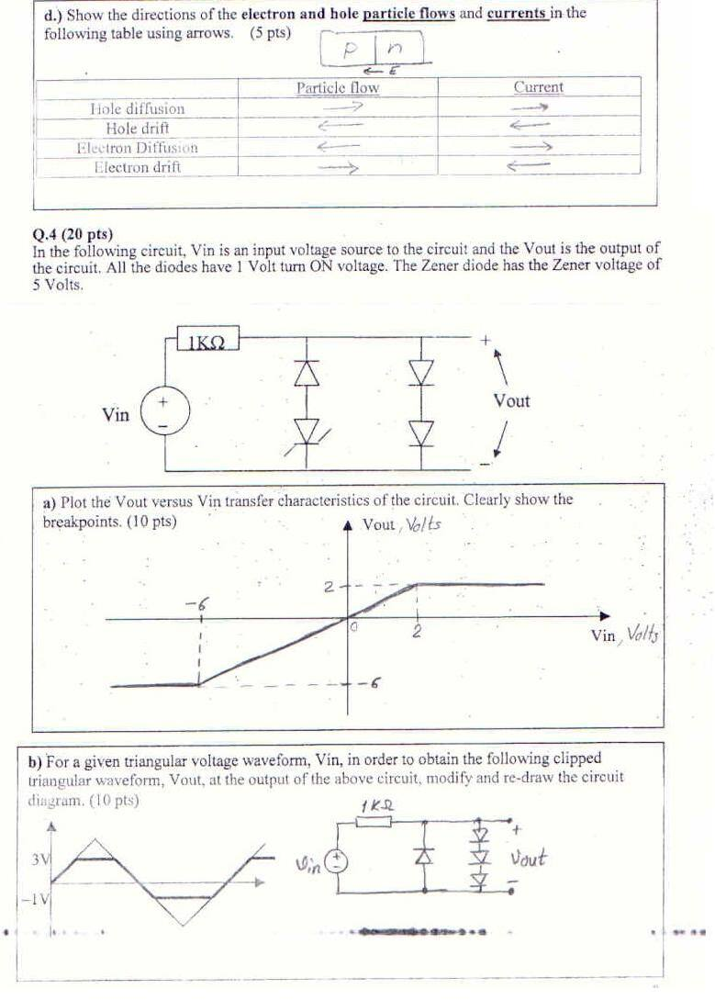
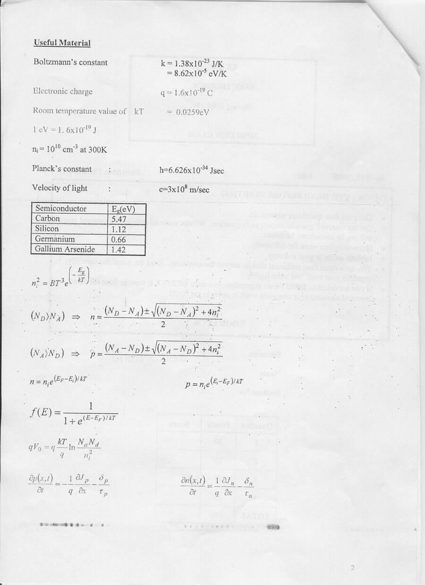
Laboratory quiz (Group I and II)
Solutions written on the EEM-214 Electronics Laboratory Quiz-1 papers:
- Group I: A Zener regulator with V_i = 20 V, R = 1 kΩ, V_Z = 10 V, and R_L = 4 kΩ. i_L = 10 V / 4 kΩ = 2.5 mA, i_R = (20 − 10)/1 kΩ = 10 mA, i_Z = 10 − 2.5 = 7.5 mA, P_Z = 10 V × 7.5 mA = 75 mW.
- Group II: Two Si diodes (V_diode = 0.7 V) with their anodes connected to the V_o node, and V_o connected to +5 V through 1 kΩ. With V₁ = V₂ = 0 V: V_o = 0.7 V, I_o = (5 − 0.7)/1 kΩ = 4.3 mA; when one of the inputs is 10 V, that diode is reverse biased and the result is the same (0.7 V, 4.3 mA); when both are 10 V, both diodes are cut off, V_o = 5 V, I_o = 0. When the table is converted to logic levels, the circuit works like an AND gate.
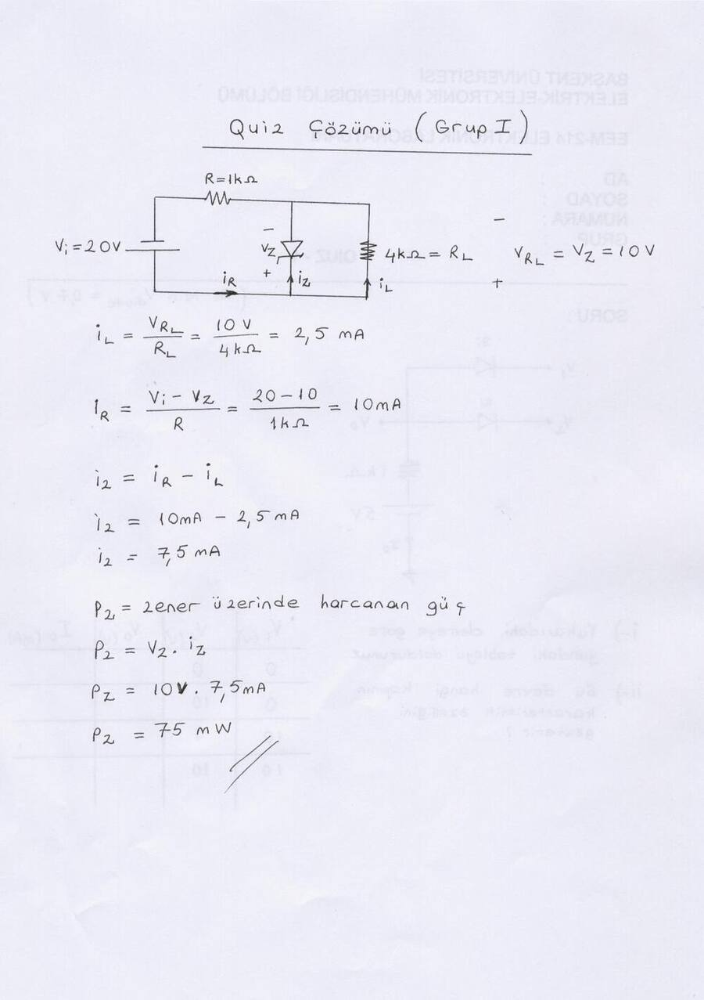
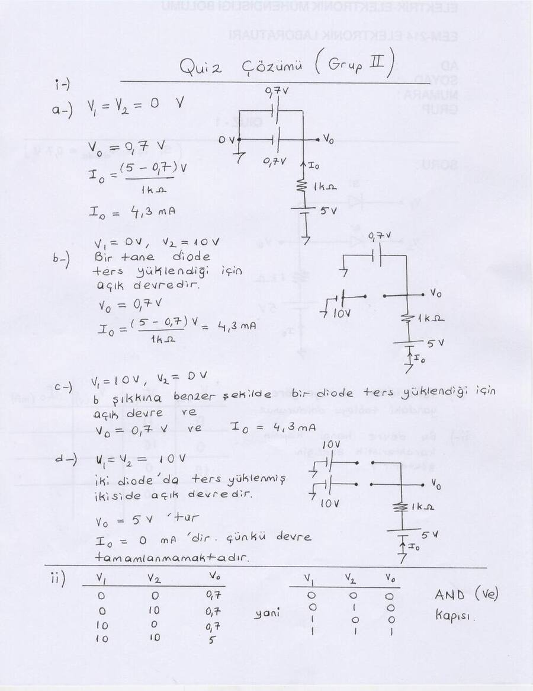
Quiz I (Group 3 and 4)
Two circuits in which the diode states are found by the assume-and-verify method:
- Group 3: First, both diodes are assumed to be off; since V_D1 = 10/3 V > 0, D1 must be on. With D1 on and D2 off assumed, the node equation (V₁ − 9.3)/1k + (V₁ − 5)/1k + V₁/2k = 0 ⇒ V₁ = 5.72 V; i_D1 = 3.58 mA > 0 (D1 on), V_D2 = −2.86 V < 0 (D2 off); V_o = 2.86 V.
- Group 4: Similarly, D1 on and D2 off; (V₁ − 10)/2k + (V₁ − 5.7)/1k + V₁/8k = 0 ⇒ V₁ = 6.58 V; i_D1 = 0.885 mA, V_D2 = −0.3 V; V_o = 3.3 V.
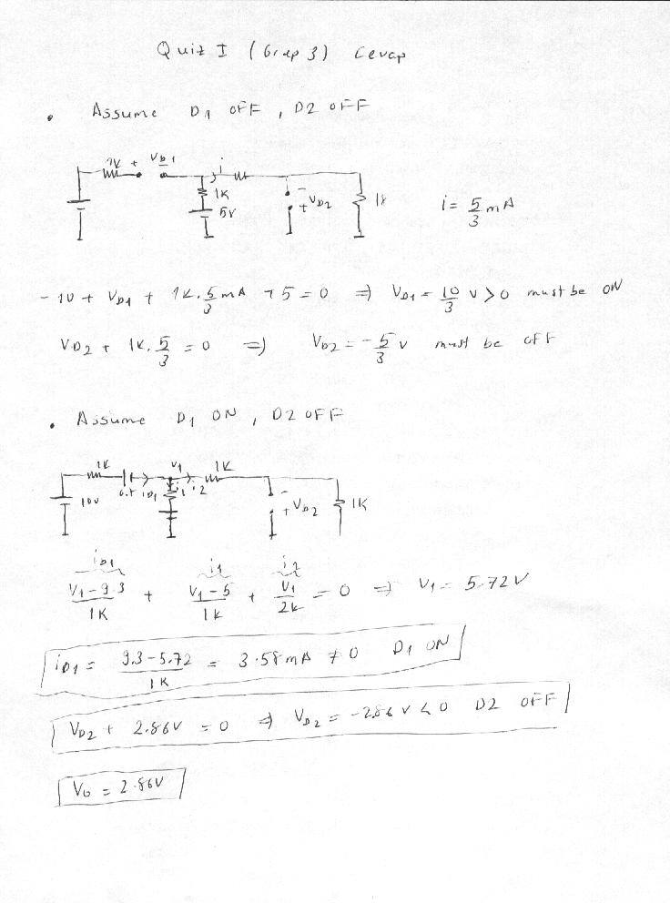
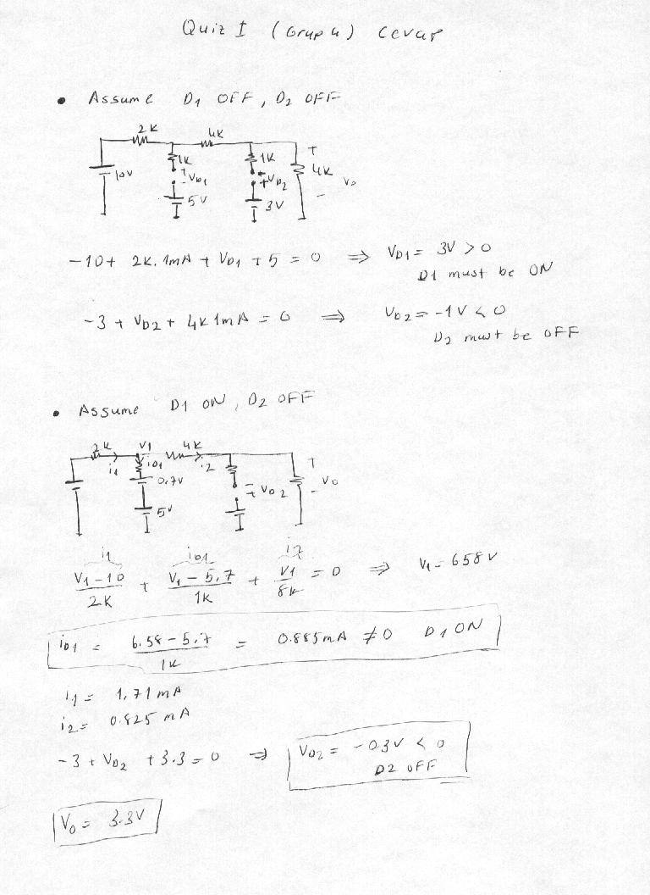
Practice problems
- Draw the AC equivalent circuit of the circuit shown (a two-transistor amplifier fed by a current mirror) and derive the expression for v_o/v_i = A_v.
- Draw the AC equivalent circuit of the circuit below (Q1–Q2 differential pair, Q3–Q4 current-mirror active load) and derive the expression for the voltage gain.
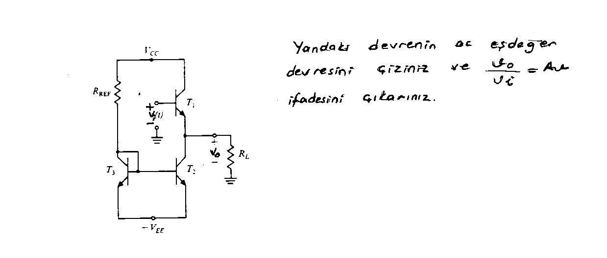
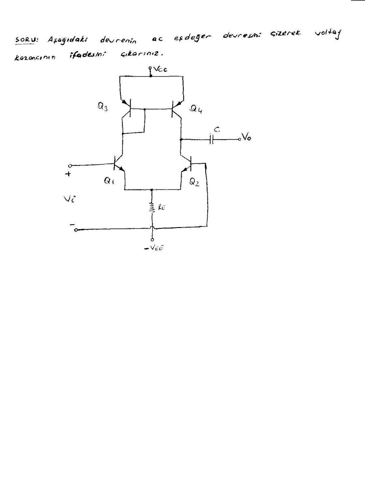
Download
The ZIP file contains seven scanned pages of the midterm, four pages of the quizzes, and two images of the practice problems.